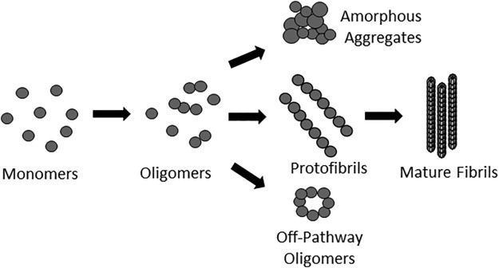
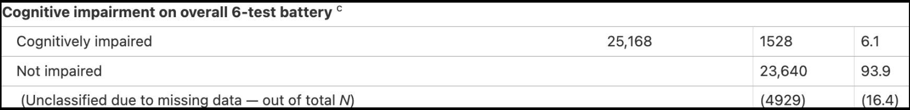
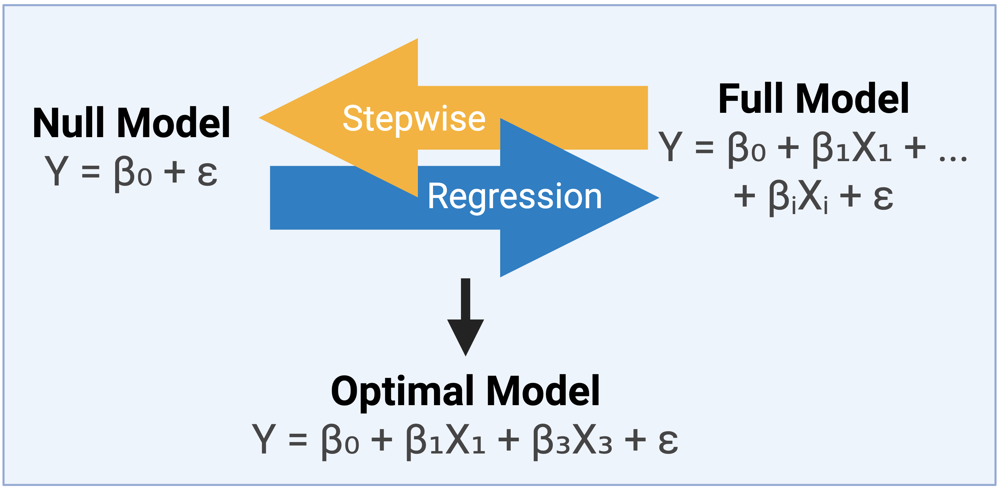
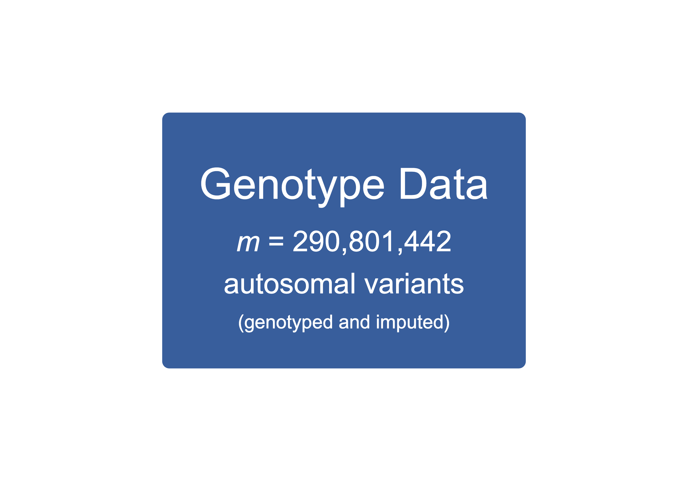
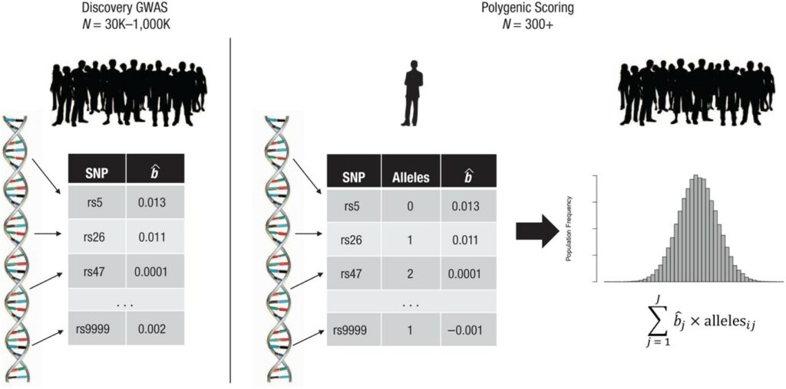

Uncovering the genetic relationship between dementia and age-related hearing loss
University of Manitoba, Department of Biochemistry and Medical Genetics
2025-03-05
What is dementia?
A common neurodegenerative disorder
Symptoms
Demographics
What is dementia?
A common neurodegenerative disorder
Symptoms
Demographics
Subtypes

What is dementia?
A common neurodegenerative disorder
Symptoms
Demographics
Subtypes
Pathologies
PROTEIN AGGREGATES
(tau, amyloids, others)

LOSS OF NEURONS and SYNAPSE CONNECTIONS
CHRONIC INFLAMMATION
GENETICS
What are the risk factors for dementia?
(Global)
What are the risk factors for dementia?
(Canada)
How are hearing loss and dementia connected?
Causal Relationship
Common Cause
Can hearing loss cause dementia?
Altered cognitive load
Neuroplastic reorganization
Can we use genetics to explore causality?
Mendelian Randomization (MR) to explore causality

Do hearing loss and dementia share a common cause?
Inflammation
Poor Vascular Health
Protein Aggregates
Loss of Neurons/Synapses
Genetic Factors
Can we use genetics to find a common cause?
MTAG to find a common cause
(Multi-Trait Analysis of GWAS)
MTAG to find a common cause
(Multi-Trait Analysis of GWAS)
MTAG to find a common cause
(Multi-Trait Analysis of GWAS)
- Fine-mapping
- Enrichment Analysis
No clear consensus on genetic relationship
| Paper | Study Design | Sample Size | Population | Hearing Loss Phenotype | Cog. Phenotype | Finding |
|---|---|---|---|---|---|---|
| Mitchell 2020 | GWAS, MR, PGS | 250k | European | Self-reported Hearing Difficulty | Clinical Diagnosis, 'AD-by-Proxy' | No Causal Effect, AD PGS predicts H. Diff. |
| Brenowitz 2020 | MR, PGS | 245k | European | Digital Triplet Test, Self-report | Verbal Reasoning test score, AD PGS (based on 25 genetic loci) | Association between AD PGS and poor speech-in-noise hearing, No Association between Hearing PGS and cognitive scores. |
| Xu 2024 | MR, Cross-sectional Study | 500k | European and Chinese | Self-report, Audiometry | Battery of Cognitive Tests | Hearing Loss is a risk factor for cognitive impairment |
| Wang 2022 | PGS, cross-sectional and longitudinal analysis | 500k | European and Chinese | Self-report, Speech-in-Noise Test | Battery of Cognitive Tests, Imaging Data, cerebrospinal fluid Protein levels (tau, amyloid-beta) | Hearing Impairment is associated with cognitive decline, brain atrophy, and tau levels |
| Abidin 2021 | MR, Gene-set and function enrichment | 250k | European | Self-report | Clinical Diagnosis | No Genetic Correlation, Possible causal relationship from AD to HL via APOE locus |
| Acronyms: AD = Alzheimer's Disease; GWAS = Genome-Wide Association Study; ; HL = Hearing Loss; MR = Mendelian Randomization; PGS = Polygenic Score. | ||||||
| Paper | Study Design | Sample Size | Population | Hearing Loss Phenotype | Cog. Phenotype | Finding |
|---|---|---|---|---|---|---|
| Mitchell 2020 | GWAS, MR, PGS | 250k | European | Self-reported Hearing Difficulty | Clinical Diagnosis, 'AD-by-Proxy' | No Causal Effect, AD PGS predicts H. Diff. |
| Brenowitz 2020 | MR, PGS | 245k | European | Digital Triplet Test, Self-report | Verbal Reasoning test score, AD PGS (based on 25 genetic loci) | Association between AD PGS and poor speech-in-noise hearing, No Association between Hearing PGS and cognitive scores. |
| Xu 2024 | MR, Cross-sectional Study | 500k | European and Chinese | Self-report, Audiometry | Battery of Cognitive Tests | Hearing Loss is a risk factor for cognitive impairment |
| Wang 2022 | PGS, cross-sectional and longitudinal analysis | 500k | European and Chinese | Self-report, Speech-in-Noise Test | Battery of Cognitive Tests, Imaging Data, cerebrospinal fluid protein levels (tau, amyloid-beta) | Hearing Impairment is associated with cognitive decline, brain atrophy, and tau levels |
| Abidin 2021 | MR, Gene-set and function enrichment | 250k | European | Self-report | Clinical Diagnosis | No Genetic Correlation, Possible causal relationship from AD to HL via APOE locus |
| Acronyms: AD = Alzheimer's Disease; GWAS = Genome-Wide Association Study; ; HL = Hearing Loss; MR = Mendelian Randomization; PGS = Polygenic Score. | ||||||
| Paper | Study Design | Sample Size | Population | Hearing Loss Phenotype | Cog. Phenotype | Finding |
|---|---|---|---|---|---|---|
| Mitchell 2020 | GWAS, MR, PGS | 250k | European | Self-reported Hearing Difficulty | Clinical Diagnosis, 'AD-by-Proxy' | No Causal Effect, AD PGS predicts H. Diff. |
| Brenowitz 2020 | MR, PGS | 245k | European | Digital Triplet Test, Self-report | Verbal Reasoning test score, AD PGS (based on 25 genetic loci) | Association between AD PGS and poor speech-in-noise hearing, No Association between Hearing PGS and cognitive scores. |
| Xu 2024 | MR, Cross-sectional Study | 500k | European and Chinese | Self-report, Audiometry | Battery of Cognitive Tests | Hearing Loss is a risk factor for cognitive impairment |
| Wang 2022 | PGS, cross-sectional and longitudinal analysis | 500k | European and Chinese | Self-report, Speech-in-Noise Test | Battery of Cognitive Tests, Imaging Data, cerebrospinal fluid Protein levels (tau, amyloid-beta) | Hearing Impairment is associated with cognitive decline, brain atrophy, and tau levels |
| Abidin 2021 | MR, Gene-set and function enrichment | 250k | European | Self-report | Clinical Diagnosis | No Genetic Correlation, Possible causal relationship from AD to HL via APOE locus |
| Acronyms: AD = Alzheimer's Disease; GWAS = Genome-Wide Association Study; ; HL = Hearing Loss; MR = Mendelian Randomization; PGS = Polygenic Score. | ||||||
Phenotypes
Is “self-report” data objective?
Hearing loss is heterogenous (causes, pathologies, etc.)
Evidence for a genetic correlation between specific hearing loss subtypes and dementia
- Model-based hearing loss phenotype
- Genes linked to dementia were also associated with metabolic hearing loss
ARHGEF28
IPO7
FUS
Project Overview
Hypothesis
Using clear hearing and cognitive phenotypes, we can better understand the genetic relationship between ARHL and dementia.
Aim 1: Underlying Genetics
- Causal Relationship (MR)
- Common Cause (MTAG)
Aim 2: Prediction Model
- PGS robust to ancestry differences (SBayesRC)
Project Overview
Hypothesis
Using clear hearing and cognitive phenotypes, we can better understand the genetic relationship between ARHL and dementia.
Aim 1: Underlying Genetics
Causal Relationship (MR)
Common Cause (MTAG)
Aim 2: Prediction Model
- PGS robust to ancestry differences (SBayesRC)
What data are we using?
(Canadian Longitudinal Study on Aging)
Comprehensive Cohort
Cross-Sectional and Longitudinal Data
What is our dementia phenotype?
Cognitive Impairment Indicator
Memory
Executive Function

What is our hearing loss phenotype?
ARHL subtype estimates
Metabolic Hearing Loss
Sensory Hearing Loss
What is our hearing loss phenotype?
ARHL subtype estimates
Metabolic Hearing Loss
Strongly correlated with:
- Age
- Cognitive impairment (P: 3x10-9)
What is our hearing loss phenotype?
ARHL subtype estimates
Sensory Hearing Loss
Not strongly correlated with:
- Age
- Cognitive impairment (P: 0.35)
What’s in the CLSA genotype data?
26,622 individuals
794k genotyped variants
308 million imputed variants
Extensive QC

Aim 1 - Pre-GWAS
Covariate selection

Vision Loss
Hypertension
Depression
TBI
Diabetes
Smoking and Alcohol
Social Activity
Aim 1 - Pre-GWAS
Marker quality control

Aim 1 - Pre-GWAS
Sample quality control

Aim 1 - GWAS
Aim 1: Mendelian Randomization
Bias Model
MR Model
Aim 1: MR Quality Control
Next steps
Measure causal relationship (MR-APSS)
Identify correlated genetic loci (MTAG)
Identify likely causal variants (PolyFun/SuSiE)
Aim 1: Underlying Genetics
- Causal Relationship (MR)
- Common Cause (MTAG)
Aim 2: Prediction Model
Next Steps
Aim 1: Underlying Genetics
Aim 2: Prediction Model
Future Directions
Next steps
Aim 1: Underlying Genetics
Aim 2: Prediction Model
Future Directions
Future directions
Sex-stratified GWAS
MHC complex
Short-tandem repeats
Limitations
Sample Population
Cross-Sectional Data
Cognitive Phenotype
Academic Progress Report
Since last meeting
Academics
- IMED 7170 (A+)
- IMED 7280 (A+)
Awards
- CIHR CGS-M
- 3MT Finalist
- Outstanding Poster (BMG Research Day 2025)
Abstracts
- AAIC (July 2025)
- MSHRF (June 2025)
Presentations
- BMG seminar (March 2025)
- MHRE lecture: Genetics of Aging (Feb 2025)
- Centre on Aging: STAR meeting (Nov 2024)
Committees
- Event Representative, BMG GSA (since Sept 2024)
- VP Marketing & Events, HSGSA (since May 2025)
Volunteering
- Science Fair Judge (April 2025)
- School Group Guide, Science Rendezvous (April 2025)
Acknowledgements
Supp. 1 - ARHL
Age-Related Hearing Loss
Symptoms
Demographics
Potential Pathologies

ENVIRONMENTAL FACTORS
(noise, drug toxicity)
OXIDATIVE STRESS
CHRONIC INFLAMMATION
GENETICS
Supp. 1 - CLSA Demographics
Supp. 2 - Initial Analysis
| ARHL Subtype | Coefficient(SE) | OR (95% CI) | P-value |
|---|---|---|---|
| Metabolic ARHL | 0.017 (0.003) | 1.016 (1.011,1.022) | 3E-9 |
| Sensory ARHL | -0.003 (0.004) | 0.99 (0.988,1.004) | 0.35 |
| Acronyms: ARHL = Age-related Hearing Loss; SE = Standard Error; OR = Odds Ratio; CI = Confidence Interval. | |||
Supp. 3 - Met. HL Gene Information
| Gene | Function | Details |
|---|---|---|
| ARHGEF28 | Rho-guanine nuclotide exchange factor | Implicated in motor neuron disease pathogenesis; significantly associated with hearing difficulty. |
| FUS | RNA-binding protein | Mislocalizes and forms aggregates (FTD); may maintain homeostasis in SV of inner ear |
| IPO7 | Nuclear import protein | modulates phase behavior of prion-like proteins (FUS included); linked to inflammatory responses in brain |
| Acronyms: FTD = Frontotemporal Dementia; SV = Stria Vascularis. | ||
Supp. 4 - MR and MTAG assumptions
MR
- variants are strongly associated with the exposure, and explain a significant portion of the variability
- variants are independent of confounders affecting both exposure and outcome
- variants only affect outcome through their impact on the exposure
MTAG
- variants influence the traits in a similar way (homogenous effect sizes)
- small errors or randomness in our estimates don’t distort our findings (sampling variance)
- sample overlap is accurately accounted for (bi-LDSC)
Supp. 5 - Other CLSA data
Supp. 6 - CII Associations
Vision Loss
Hypertension
Depression
TBI
Diabetes
Smoking and Alcohol
Social Activity
Supp. 7 - GWAS Quality Control

Supp. 8 - SBayesRC
